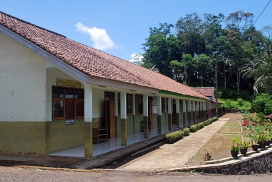

Dokumentasi
Galeri Foto SDN Sindangasih Salopa
Foto suasana lingkungan dan fasilitas belajar mengajar di SDN Sindangasih, Salopa.

Gedung Utama & Halaman Depan
Bangunan Ruang Kelas & Selasar
Fasilitas Belajar Mengajar
Lingkungan Sekolah yang Asri
Pintu Masuk & Halaman Samping

SDN Sindangasih, Salopa
Tasikmalaya